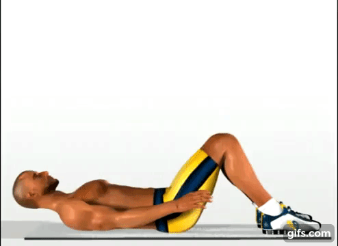
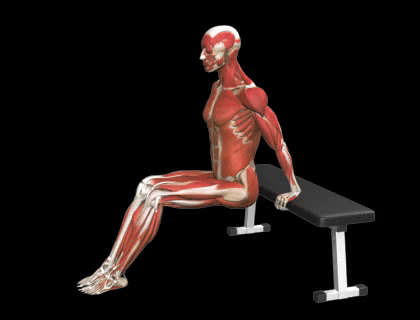

¿No conoces tu estado físico actual?, no importa, hemos creado
un conjunto de pruebas de los ejercicios corporales básicos,
con los cuales trataremos de acomodarte tus rutinas de mejor
manera, cada ejercicio tendrá un tiempo de 30 segundos, en
los cuales harás la cantidad que puedas ¿Estás listo?, Vamos...
-
Flexiones
-
Las flexiones de brazos son un ejercicio muy común en cualquier disciplina deportiva,
normalmente se utiliza
para mejorar la condición física y poner a tono los músculos del tren superior.

-
Comenzar prueba
-
Sentadillas
-
Una sentadilla es un ejercicio físico que se lleva a cabo para desarrollar los músculos y
fortalecer los tendones
y los ligamentos de las piernas. También permite tonificar los glúteos y aporta beneficios a
la cadera.

-
Comenzar prueba
-
Abdominales
-
los ejercicios abdominales son rutinas de actividades físicas que se realizan con el
objetivo de tonificar los músculos
de la zona. Antes de la tonificación, es necesario eliminar la grasa que recubre dichos
músculos, a través del ejercicio aeróbico y de una alimentación saludable.

-
Comenzar prueba
-
Fondos
-
El fondo es un ejercicio usado en el entrenamiento de la fuerza, desarrollan principalmente
los tríceps, junto con músculos sinergísticos como los deltoides, los pectorales
(esternales, claviculares y menores) y los músculos romboides de la espalda.

-
Comenzar prueba
Nota: Si no quieres realizar los ejercicios, esta bien continua, tus rutinas se harán con base
a el promedio de los datos generales.
Continuar